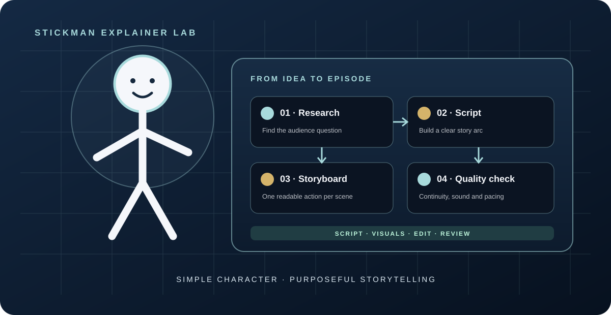
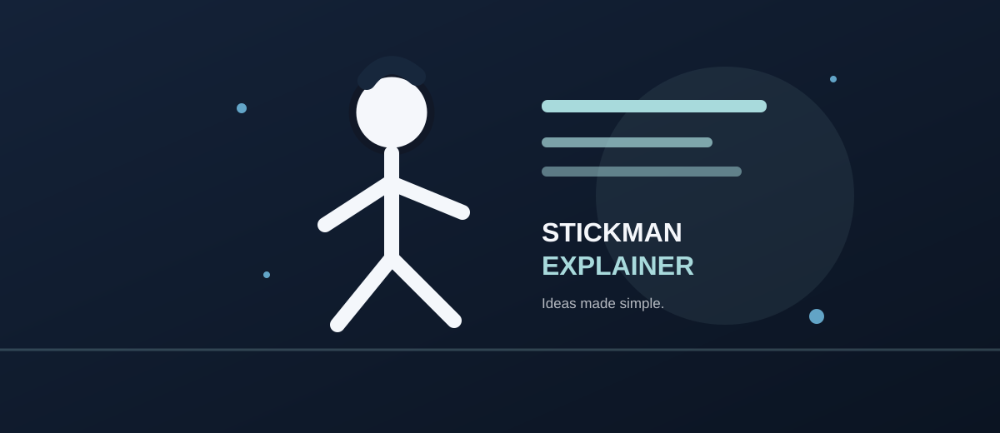

People + AI assistance
AI is a working assistant—not a replacement for judgement. It can help organize information, draft content, summarize research and prepare work for human review.
Research supportDraftingHuman review
PORTFOLIO · 2026
AI Automation Expert & Consultant
I build thoughtful AI-assisted content and structured workflows, combining creative judgement with clear process design, quality checks and human review.
AI ASSISTANCE & WORKFLOW DEMONSTRATION
AI can support research, drafting and repetitive steps. A clear workflow connects the tools, checks the output and keeps a person in control of important decisions.
AI is a working assistant—not a replacement for judgement. It can help organize information, draft content, summarize research and prepare work for human review.

A workflow can pass structured information between tools, route tasks, flag missing details and record outcomes instead of relying on repeated copy-and-paste.

Research → AI assistant → automation → validation → human approval. This visual explains the logic of a workflow. The exact integrations and actions are selected for each project; the approval step keeps the owner in control before important work is released.


Pair a consistent Stickman visual style with researched scripts, planned scenes and quality checks to turn educational ideas into clear explainer videos.
Explore the Stickman Explainer project ↗ View the Stickman reference on Pexels ↗SELECTED WORK
Explore workflow architecture, AI-assisted production and structured storytelling built around clear planning, quality control and purposeful delivery.

A structured approach to moving content through research, briefing, scripting, media preparation, quality assurance, human approval and reporting. The design emphasizes clear stage transitions, validation, error handling and traceable decisions.

A story-first wildlife and science entertainment concept, built around curiosity, factual care, scene planning and a quality-review process before publication.

A production-focused approach to AI filmmaking, covering camera movement, continuity, scene composition, sound direction, pacing and human-led creative decisions.

A repeatable long-form explainer structure connecting topic selection, script development, timeline planning, visual prompts, thumbnail direction and final content checks.
SCRIPTWRITING & PROMPT DESIGN
Story beats, narration purpose, visual direction and continuity notes turn a concept into a production-ready plan.

A structured prompt framework for planning a believable behind-the-scenes sequence: establish the set, reveal practical effects, show the crew at work and preserve camera, lighting and prop continuity between beats.

Build around a strong opening question, a sequence of discoveries, purposeful narration, visual evidence and a satisfying payoff. Each scene has a clear job; voice-over adds context or mystery instead of simply describing visible action.
MY VISION
Human-led AI content and workflows that are clear, testable and improved through evidence.
SKILLS & TOOLING
Tools support the process; clear requirements, human judgement and testing determine whether the result is ready.
Map steps, define inputs and outputs, add decision points, exception paths and human approval.
Architecture · Process mapping · QAUse ChatGPT, Claude and Gemini to research, structure ideas, refine prompts and support production.
Prompting · Iteration · ReviewDevelop scripts, short-form concepts, scene plans and creative direction for digital audiences.
Storytelling · Scriptwriting · EditingPlan voice-led content and coordinate AI voice, visual and editing tools within a production workflow.
Voice · Visual planning · ContinuityStructure automation workflows with clear triggers, data mapping, conditional routing, validation, exception handling and human approval.
Orchestration · Routing · Quality controlCheck required fields, expected outputs, failure paths, user approval and evidence before release.
Validation · Retesting · AuditabilityBuild reusable instructions with context, constraints, visual details and negative requirements.
Prompt systems · RefinementOrganize research into briefs, content structures and decision-ready production notes.
Research · Briefs · DocumentationHOW I CAN HELP
Engagement scope depends on the brief, available tools and what can be verified during delivery.
Map a process, identify manual bottlenecks and design validation and approval steps before implementation.
Turn a brief into researched concepts, scripts, prompt sets and structured content plans.
Organize scenes, camera direction, continuity and sound notes for AI-assisted video projects.
ABOUT MY APPROACH
I'm an AI Content Creator and AI Automation Specialist with two years of professional experience. My work combines digital content, storytelling, prompt development and structured workflow design. I focus on making processes understandable, reviewable and easier to improve—not simply adding AI to every step. I'm available for remote and online collaboration.
Read my professional CV ↗AUDIENCE & ADAPTABILITY
My primary focus is US and international audiences. I plan content with audience interest, clarity, retention and platform fit in mind. For Nigeria and other markets, I can adapt language, cultural references, tone and storytelling style to suit the intended audience.
VIDEO PORTFOLIO
Examples of creative video work. Use the player controls to watch each sample.
VID-20260907-WA0015(1).mp4
VID-20261016-WA0016.mp4
sample-video-02.mp4
Additional video sample
LET'S CONNECT
Send a short note about what you need. I'll review the scope and respond through email or WhatsApp.